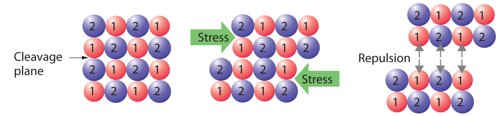

With few exceptions, the particles that compose a solid material, whether ionic, molecular, covalent, or metallic, are held in place by strong attractive forces between them. When we discuss solids, therefore, we consider the positions of the atoms, molecules, or ions, which are essentially fixed in space, rather than their motions (which are more important in liquids and gases). The constituents of a solid can be arranged in two general ways: they can form a regular repeating three-dimensional structure called a crystal latticeA regular repeating three-dimensional structure., thus producing a crystalline solidA solid with a regular repeating three-dimensional structure., or they can aggregate with no particular order, in which case they form an amorphous solidA solid with no particular structural order. (from the Greek ámorphos, meaning “shapeless”).
Crystalline solids, or crystals, have distinctive internal structures that in turn lead to distinctive flat surfaces, or faces. The faces intersect at angles that are characteristic of the substance. When exposed to x-rays, each structure also produces a distinctive pattern that can be used to identify the material (see Section 12.3 "Structures of Simple Binary Compounds"). The characteristic angles do not depend on the size of the crystal; they reflect the regular repeating arrangement of the component atoms, molecules, or ions in space. When an ionic crystal is cleaved (Figure 12.1 "Cleaving a Crystal of an Ionic Compound along a Plane of Ions"), for example, repulsive interactions cause it to break along fixed planes to produce new faces that intersect at the same angles as those in the original crystal. In a covalent solid such as a cut diamond, the angles at which the faces meet are also not arbitrary but are determined by the arrangement of the carbon atoms in the crystal.
Crystalline faces. The faces of crystals can intersect at right angles, as in galena (PbS) and pyrite (FeS2), or at other angles, as in quartz.
Cleavage surfaces of an amorphous solid. Obsidian, a volcanic glass with the same chemical composition as granite (typically KAlSi3O8), tends to have curved, irregular surfaces when cleaved.
Figure 12.1 Cleaving a Crystal of an Ionic Compound along a Plane of Ions
Deformation of the ionic crystal causes one plane of atoms to slide along another. The resulting repulsive interactions between ions with like charges cause the layers to separate.
Crystals tend to have relatively sharp, well-defined melting points because all the component atoms, molecules, or ions are the same distance from the same number and type of neighbors; that is, the regularity of the crystalline lattice creates local environments that are the same. Thus the intermolecular forces holding the solid together are uniform, and the same amount of thermal energy is needed to break every interaction simultaneously.
Amorphous solids have two characteristic properties. When cleaved or broken, they produce fragments with irregular, often curved surfaces; and they have poorly defined patterns when exposed to x-rays because their components are not arranged in a regular array. An amorphous, translucent solid is called a glassAn amorphous, translucent solid. A glass is a solid that has been cooled too quickly to form ordered crystals.. Almost any substance can solidify in amorphous form if the liquid phase is cooled rapidly enough. Some solids, however, are intrinsically amorphous, because either their components cannot fit together well enough to form a stable crystalline lattice or they contain impurities that disrupt the lattice. For example, although the chemical composition and the basic structural units of a quartz crystal and quartz glass are the same—both are SiO2 and both consist of linked SiO4 tetrahedra—the arrangements of the atoms in space are not. Crystalline quartz contains a highly ordered arrangement of silicon and oxygen atoms, but in quartz glass the atoms are arranged almost randomly. When molten SiO2 is cooled rapidly (4 K/min), it forms quartz glass, whereas the large, perfect quartz crystals sold in mineral shops have had cooling times of thousands of years. In contrast, aluminum crystallizes much more rapidly. Amorphous aluminum forms only when the liquid is cooled at the extraordinary rate of 4 × 1013 K/s, which prevents the atoms from arranging themselves into a regular array.
The lattice of crystalline quartz (SiO2). The atoms form a regular arrangement in a structure that consists of linked tetrahedra.
In an amorphous solid, the local environment, including both the distances to neighboring units and the numbers of neighbors, varies throughout the material. Different amounts of thermal energy are needed to overcome these different interactions. Consequently, amorphous solids tend to soften slowly over a wide temperature range rather than having a well-defined melting point like a crystalline solid. If an amorphous solid is maintained at a temperature just below its melting point for long periods of time, the component molecules, atoms, or ions can gradually rearrange into a more highly ordered crystalline form.
Crystals have sharp, well-defined melting points; amorphous solids do not.
Solids are characterized by an extended three-dimensional arrangement of atoms, ions, or molecules in which the components are generally locked into their positions. The components can be arranged in a regular repeating three-dimensional array (a crystal lattice), which results in a crystalline solid, or more or less randomly to produce an amorphous solid. Crystalline solids have well-defined edges and faces, diffract x-rays, and tend to have sharp melting points. In contrast, amorphous solids have irregular or curved surfaces, do not give well-resolved x-ray diffraction patterns, and melt over a wide range of temperatures.
Compare the solid and liquid states in terms of
How do amorphous solids differ from crystalline solids in each characteristic? Which of the two types of solid is most similar to a liquid?
Why is the arrangement of the constituent atoms or molecules more important in determining the properties of a solid than a liquid or a gas?
Why are the structures of solids usually described in terms of the positions of the constituent atoms rather than their motion?
What physical characteristics distinguish a crystalline solid from an amorphous solid? Describe at least two ways to determine experimentally whether a material is crystalline or amorphous.
Explain why each characteristic would or would not favor the formation of an amorphous solid.
A student obtained a solid product in a laboratory synthesis. To verify the identity of the solid, she measured its melting point and found that the material melted over a 12°C range. After it had cooled, she measured the melting point of the same sample again and found that this time the solid had a sharp melting point at the temperature that is characteristic of the desired product. Why were the two melting points different? What was responsible for the change in the melting point?
The arrangement of the atoms or molecules is more important in determining the properties of a solid because of the greater persistent long-range order of solids. Gases and liquids cannot readily be described by the spatial arrangement of their components because rapid molecular motion and rearrangement defines many of the properties of liquids and gases.
The initial solid contained the desired compound in an amorphous state, as indicated by the wide temperature range over which melting occurred. Slow cooling of the liquid caused it to crystallize, as evidenced by the sharp second melting point observed at the expected temperature.